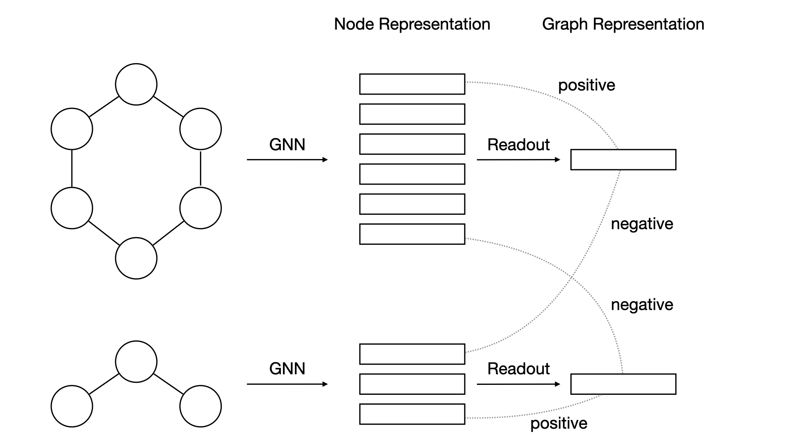
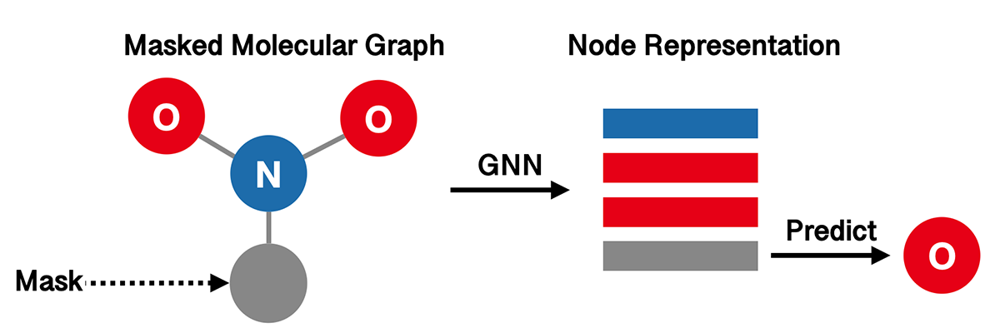

Pretrained Molecular Representations¶
In many drug discovery tasks, it is costly in both time and money to collect labeled data. As a solution, self-supervised pretraining is introduced to learn molecular representations from massive unlabeled data.
In this tutorial, we will demonstrate how to pretrain a graph neural network on molecules, and how to finetune the model on downstream tasks.
Self-Supervised Pretraining¶
Pretraining is an effective approach to transfer learning in Graph Neural Networks for graph-level property prediction. Here we focus on pretraining GNNs via different self-supervised strategies. These methods typically construct unsupervised loss functions based on structural information in molecules.
For illustrative purpose, we only use the ClinTox dataset in this tutorial, which is much smaller than the standard pretraining datasets. For real applications, we suggest using larger datasets like ZINC2M.
Infograph¶
InfoGraph (IG) proposes to maximize the mutual information between the graph-level and node-level representations. It learns the model by distinguishing whether a node-graph pair comes from a single graph or two different graphs. The following figure illustrates the high-level idea of InfoGraph.
We use GIN as our graph represenation model, and wrap it with InfoGraph.
import torch
from torch import nn
from torch.utils import data as torch_data
from torchdrug import core, datasets, tasks, models
dataset = datasets.ClinTox("~/molecule-datasets/", node_feature="pretrain",
edge_feature="pretrain")
gin_model = models.GIN(input_dim=dataset.node_feature_dim,
hidden_dims=[300, 300, 300, 300, 300],
edge_input_dim=dataset.edge_feature_dim,
batch_norm=True, readout="mean")
model = models.InfoGraph(gin_model, separate_model=False)
task = tasks.Unsupervised(model)
optimizer = torch.optim.Adam(task.parameters(), lr=1e-3)
solver = core.Engine(task, dataset, None, None, optimizer, gpus=[0], batch_size=256)
solver.train(num_epoch=100)
solver.save("clintox_gin_infograph.pth")
After training, the mutual information of the representations might be close to
average graph-node mutual information: 1.30658
Attribute Masking¶
The aim of Attribute Masking (AM) is to capture domain knowledge by learning the regularities of the node/edge attributes distributed over graph structure. The high-level idea is to predict atom types in molecular graphs from randomly masked node features.
Again, we use GIN as our graph representation model.
import torch
from torch import nn, optim
from torch.utils import data as torch_data
from torchdrug import core, datasets, tasks, models
dataset = datasets.ClinTox("~/molecule-datasets/", node_feature="pretrain",
edge_feature="pretrain")
model = models.GIN(input_dim=dataset.node_feature_dim,
hidden_dims=[300, 300, 300, 300, 300],
edge_input_dim=dataset.edge_feature_dim,
batch_norm=True, readout="mean")
task = tasks.AttributeMasking(model, mask_rate=0.15)
optimizer = optim.Adam(task.parameters(), lr=1e-3)
solver = core.Engine(task, dataset, None, None, optimizer, gpus=[0], batch_size=256)
solver.train(num_epoch=100)
solver.save("clintox_gin_attributemasking.pth")
Typically, the training accuracy and cross entropy may look like the following.
average accuracy: 0.920366
average cross entropy: 0.22998
Besides InfoGraph and Attribute Masking, there are some other strategies for pretraining GNNs. See the documentation below for more details.
See also
InfoGraph,
AttributeMasking,
EdgePrediction,
ContextPrediction
Finetune on Labeled Datasets¶
When the GNN pre-training is finished, we can finetune the pre-trained GNN model on downstream tasks. Here we use BACE dataset for illustration, which contains 1,513 molecules with binding affinity results a set of inhibitors of human \(\beta\)-secretase 1(BACE-1).
First, we download the BACE dataset and split it into training, validation and test sets. Note that we need to set the node and edge feature in the dataset as pretrain in order to make it compatible with the pretrained model.
dataset = datasets.BACE("~/molecule-datasets/",
node_feature="pretrain", edge_feature="pretrain")
lengths = [int(0.8 * len(dataset)), int(0.1 * len(dataset))]
lengths += [len(dataset) - sum(lengths)]
train_set, valid_set, test_set = data.ordered_scaffold_split(dataset, lengths)
Then, we define the same model as the pre-training stage and set up the optimizer
and solver for our downstream task. The only difference here is that we use
PropertyPrediction task to support
supervised learning.
model = models.GIN(input_dim=dataset.node_feature_dim,
hidden_dims=[300, 300, 300, 300, 300],
edge_input_dim=dataset.edge_feature_dim,
batch_norm=True, readout="mean")
task = tasks.PropertyPrediction(model, task=dataset.tasks,
criterion="bce", metric=("auprc", "auroc"))
optimizer = optim.Adam(task.parameters(), lr=1e-3)
solver = core.Engine(task, train_set, valid_set, test_set, optimizer,
gpus=[0], batch_size=256)
Now we can load our pretrained model and finetune it on downstream datasets.
checkpoint = torch.load("clintox_gin_attributemasking.pth")["model"]
task.load_state_dict(checkpoint, strict=False)
solver.train(num_epoch=100)
solver.evaluate("valid")
Once the model is trained, we evaluate it on the validation set. The result may be similar to the following.
auprc [Class]: 0.921956
auroc [Class]: 0.663004